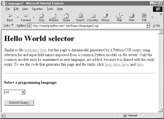
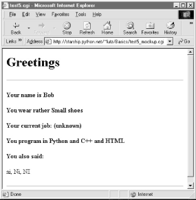

| I l@ve RuBoard |
|
12.5 Coding for MaintainabilityLet's step back from coding details for just a moment to gain some design perspective. As we've seen, Python code, by and large, automatically lends itself to systems that are easy to read and maintain; it has a simple syntax that cuts much of the clutter of other tools. On the other hand, coding styles and program design can often impact maintainability as much as syntax. For example, the "Hello World" selector pages earlier in this chapter work as advertised, and were very easy and fast to throw together. But as currently coded, the languages selector suffers from substantial maintainability flaws. Imagine, for instance, that you actually take me up on that challenge posed at the end of the last section, and you attempt to add another entry for COBOL. If you add COBOL to the CGI script's table, you're only half done: the list of supported languages lives redundantly in two places -- in the HTML for the main page as well as the script's syntax dictionary. Changing one does not change the other. More generally, there are a handful of ways that this program might fail the scrutiny of a rigorous code review:
This is a short example, of course, but issues of redundancy and reuse become more acute as your scripts grow larger. As a rule of thumb, if you find yourself changing multiple source files to modify a single behavior, or if you notice that you've taken to writing programs by cut-and-paste copying of existing code, then it's probably time to think about more rational program structures. To illustrate coding styles and practices that are more friendly to maintainers, let's rewrite this example to fix all of these weaknesses in a single mutation. 12.5.1 Step 1: Sharing Objects Between PagesWe can remove the first two maintenance problems listed above with a simple transformation; the trick is to generate the main page dynamically, from an executablescript, rather than from a precoded HTML file. Within a script, we can import the input field name and selection list values from a common Python module file, shared by the main and reply page generation scripts. Changing the selection list or field name in the common module changes both clients automatically. First, we move shared objects to a common module file, as shown in Example 12-18. Example 12-18. PP2E\Internet\Cgi-Web\Basics\languages2common.py########################################################
# common objects shared by main and reply page scripts;
# need change only this file to add a new language.
########################################################
inputkey = 'language' # input parameter name
hellos = {
'Python': r" print 'Hello World' ",
'Perl': r' print "Hello World\n"; ',
'Tcl': r' puts "Hello World" ',
'Scheme': r' (display "Hello World") (newline) ',
'SmallTalk': r" 'Hello World' print. ",
'Java': r' System.out.println("Hello World"); ',
'C': r' printf("Hello World\n"); ',
'C++': r' cout << "Hello World" << endl; ',
'Basic': r' 10 PRINT "Hello World" ',
'Fortran': r" print *, 'Hello World' ",
'Pascal': r" WriteLn('Hello World'); "
}
Module languages2common contains all the data that needs to agree between pages: the field name, as well as the syntax dictionary. The hellos syntax dictionary isn't quite HTML code, but its keys list can be used to generate HTML for the selection list on the main page dynamically. Next, in Example 12-19, we recode the main page as an executable script, and populate the response HTML with values imported from the common module file in the previous example. Example 12-19. PP2E\Internet\Cgi-Web\Basics\languages2.cgi#!/usr/bin/python
#################################################################
# generate html for main page dynamically from an executable
# Python script, not a pre-coded HTML file; this lets us
# import the expected input field name and the selection table
# values from a common Python module file; changes in either
# now only have to be made in one place, the Python module file;
#################################################################
REPLY = """Content-type: text/html
<html><body>
<title>Languages2</title>
<h1>Hello World selector</h1>
<P>Similar to file <a href="languages.html">languages.html</a>, but
this page is dynamically generated by a Python CGI script, using
selection list and input field names imported from a common Python
module on the server. Only the common module must be maintained as
new languages are added, because it is shared with the reply script.
To see the code that generates this page and the reply, click
<a href="getfile.cgi?filename=languages2.cgi">here</a>,
<a href="getfile.cgi?filename=languages2reply.cgi">here</a>,
<a href="getfile.cgi?filename=languages2common.py">here</a>, and
<a href="getfile.cgi?filename=formMockup.py">here</a>.</P>
<hr>
<form method=POST action="languages2reply.cgi">
<P><B>Select a programming language:</B>
<P><select name=%s>
<option>All
%s
<option>Other
</select>
<P><input type=Submit>
</form>
</body></html>
"""
import string
from languages2common import hellos, inputkey
options = []
for lang in hellos.keys( ):
options.append('<option>' + lang) # wrap table keys in html code
options = string.join(options, '\n\t')
print REPLY % (inputkey, options) # field name and values from module
Here again, ignore the getfile hyperlinks in this file for now; we'll learn what they mean in the next section. You should notice, though, that the HTML page definition becomes a printed Python string here (named REPLY), with %s format targets where we plug in values imported from the common module.[11] It's otherwise similar to the original HTML file's code; when we visit this script's URL, we get a similar page, shown in Figure 12-23. But this time, the page is generated by running a script on the server that populates the pull-down selection list from the keys list of the common syntax table.
Figure 12-23. Alternative main page made by languages2.cgi12.5.2 Step 2: A Reusable Form Mock-up UtilityMoving the languages table and input field name to a module file solves the first two maintenance problems we noted. But if we want to avoid writing a dummy field mock-up class in every CGI script we write, we need to do something more. Again, it's merely a matter of exploiting the Python module's affinity for code reuse: let's move the dummy class to a utility module, as in Example 12-20. Example 12-20. PP2E\Internet\Cgi-Web\Basics\formMockup.py##############################################################
# Tools for simulating the result of a cgi.FieldStorage( )
# call; useful for testing CGI scripts outside the web
##############################################################
import types
class FieldMockup: # mocked-up input object
def __init__(self, str):
self.value = str
def formMockup(**kwargs): # pass field=value args
mockup = {} # multi-choice: [value,...]
for (key, value) in kwargs.items( ):
if type(value) is not types.ListType: # simple fields have .value
mockup[key] = FieldMockup(str(value))
else: # multi-choice have list
mockup[key] = [] # to do: file upload fields
for pick in value:
mockup[key].append(FieldMockup(pick))
return mockup
def selftest( ):
# use this form if fields can be hard-coded
form = formMockup(name='Bob', job='hacker', food=['Spam', 'eggs', 'ham'])
print form['name'].value
print form['job'].value
for item in form['food']:
print item.value,
# use real dict if keys are in variables or computed
print
form = {'name':FieldMockup('Brian'), 'age':FieldMockup(38)}
for key in form.keys( ):
print form[key].value
if __name__ == '__main__': selftest( )
By placing our mock-up class in this module, formMockup.py, it automatically becomes a reusable tool, and may be imported by any script we care to write.[12] For readability, the dummy field simulation class has been renamed FieldMockup here. For convenience, we've also added a formMockup utility function that builds up an entire form dictionary from passed-in keyword arguments. Assuming you can hardcode the names of the form to be faked, the mock-up can be created in a single call. This module includes a self-test function invoked when the file is run from the command line, which demonstrates how its exports are used. Here is its test output, generated by making and querying two form mock-up objects:
C:\...\PP2E\Internet\Cgi-Web\Basics>python formMockup.py Bob hacker Spam eggs ham 38 Brian Since the mock-up now lives in a module, we can reuse it any time we want to test a CGI script offline. To illustrate, the script in Example 12-21 is a rewrite of the test5.cgi example we saw earlier, using the form mock-up utility to simulate field inputs. If we had planned ahead, we could have tested this script like this without even needing to connect to the Net. Example 12-21. PP2E\Internet\Cgi-Web\Basics\test5_mockup.cgi#!/usr/bin/python
##################################################################
# run test5 logic with formMockup instead of cgi.FieldStorage( )
# to test: python test5_mockup.cgi > temp.html, and open temp.html
##################################################################
from formMockup import formMockup
form = formMockup(name='Bob',
shoesize='Small',
language=['Python', 'C++', 'HTML'],
comment='ni, Ni, NI')
# rest same as original, less form assignment
Running this script from a simple command line shows us what the HTML response stream will look like: C:\...\PP2E\Internet\Cgi-Web\Basics>python test5_mockup.cgi Content-type: text/html <TITLE>test5.cgi</TITLE> <H1>Greetings</H1> <HR> <H4>Your name is Bob</H4> <H4>You wear rather Small shoes</H4> <H4>Your current job: (unknown)</H4> <H4>You program in Python and C++ and HTML</H4> <H4>You also said:</H4> <P>ni, Ni, NI</P> <HR> Running it live yields the page in Figure 12-24. Field inputs here are hardcoded, similar in spirit to the test5 extension that embedded input parameters at the end of hyperlink URLs. Here, they come from form mock-up objects created in the reply script that cannot be changed without editing the script. Because Python code runs immediately, though, modifying a Python script during the debug cycle goes as quickly as you can type. Figure 12-24. A response page with simulated inputs12.5.3 Step 3: Putting It All Together -- A New Reply ScriptThere's one last step on our path to software maintenance nirvana: we still must recode the reply page script itself, to import data that was factored out to the common module and import the reusable form mock-up module's tools. While we're at it, we move code into functions (in case we ever put things in this file that we'd like to import in another script), and all HTML code to triple-quoted string blocks (see Example 12-22). Changing HTML is generally easier when it has been isolated in single strings like this, rather than being sprinkled throughout a program. Example 12-22. PP2E\Internet\Cgi-Web\Basics\languages2reply.cgi#!/usr/bin/python
#########################################################
# for easier maintenance, use html template strings, get
# the language table and input key from common mdule file,
# and get reusable form field mockup utilities module.
#########################################################
import cgi, sys
from formMockup import FieldMockup # input field simulator
from languages2common import hellos, inputkey # get common table, name
debugme = 0
hdrhtml = """Content-type: text/html\n
<TITLE>Languages</TITLE>
<H1>Syntax</H1><HR>"""
langhtml = """
<H3>%s</H3><P><PRE>
%s
</PRE></P><BR>"""
def showHello(form): # html for one language
choice = form[inputkey].value # escape lang name too
try:
print langhtml % (cgi.escape(choice),
cgi.escape(hellos[choice]))
except KeyError:
print langhtml % (cgi.escape(choice),
"Sorry--I don't know that language")
def main( ):
if debugme:
form = {inputkey: FieldMockup(sys.argv[1])} # name on cmd line
else:
form = cgi.FieldStorage( ) # parse real inputs
print hdrhtml
if not form.has_key(inputkey) or form[inputkey].value == 'All':
for lang in hellos.keys( ):
mock = {inputkey: FieldMockup(lang)}
showHello(mock)
else:
showHello(form)
print '<HR>'
if __name__ == '__main__': main( )
When global debugme is set to 1, the script can be tested offline from a simple command line as before: C:\...\PP2E\Internet\Cgi-Web\Basics>python languages2reply.cgi Python Content-type: text/html <TITLE>Languages</TITLE> <H1>Syntax</H1><HR> <H3>Python</H3><P><PRE> print 'Hello World' </PRE></P><BR> <HR> When run online, we get the same reply pages we saw for the original version of this example (we won't repeat them here again). This transformation changed the program's architecture, not its user interface. Most of the code changes in this version of the reply script are straightforward. If you test-drive these pages, the only differences you'll find are the URLs at the top of your browser (they're different files, after all), extra blank lines in the generated HTML (ignored by the browser), and a potentially different ordering of language names in the main page's pull-down selection list. This selection list ordering difference arises because this version relies on the order of the Python dictionary's keys list, not on a hardcoded list in an HTML file. Dictionaries, you'll recall, arbitrarily order entries for fast fetches; if you want the selection list to be more predictable, simply sort the keys list before iterating over it using the list sort method. |
| I l@ve RuBoard |
|